0. 課程資訊與教材
| 課程名稱 | EP44_「2026 年上半年一定會的 AI 技能」 |
|---|---|
| 頻道 | 生成式 AI 應用電台・晨學講堂 |
| 直播日期 | 2026/07/03（五）晚間；本份筆記依據的錄影段全長 59 分鐘 |
| 課程定位 | 半年度總複習——講師開場即說明：「隨著 Agent 出來，下半年的東西會變得更快，順便把上半年的技術了解一下」，並預告 「我今天不會講太多 Agent，因為第一個 Agent 要花一點時間」 |
| 四大篇章 | ✍️ 文字篇（4） 🎨 生圖篇（4） 🤖 AI Agent 篇（7） ⚙️ 自動化篇（2）——括號為簡報章節頁數 |
| 貫穿案例 | 全程以「颱風」當範例：颱風預測專家角色卡 → 颱風假查詢 → 颱風擬人化 Q 版生圖 → 颱風假 SWOT 報告 → 颱風擬人化影片 |
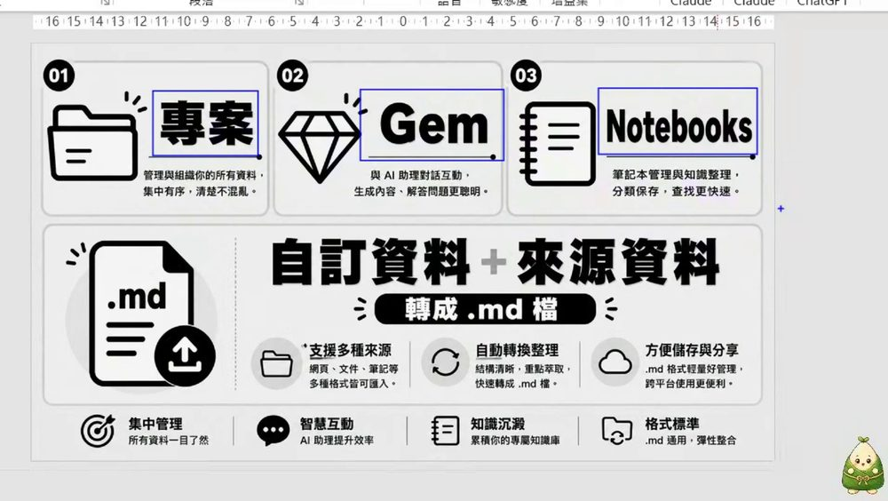
📊 課程簡報（可直接翻頁預覽）
🎬 錄影回放（可直接播放）
1. 一頁看懂全課程
這堂課用一個聰明的教學設計：四大篇章共用同一個範例「颱風」。從「請 AI 當颱風預測專家」開始，一路做到「把颱風擬人化成 Q 版角色、生成影片、再讓 Agent 自動查會不會放颱風假」——學員看到的不是四個孤立工具，而是同一件事被四種能力接力完成。
2. 逐幀時間軸（59 分鐘全程）
下表把整支錄影切成可核對的段落，每一列都是親眼逐格判讀的實錄。點各章節可看該段的詳細筆記與截圖。
| 時間 | 畫面／工具 | 發生了什麼 |
|---|---|---|
| 00:00 | Google Meet | 開場、螢幕分享（跳出「無限鏡室效應」提醒）、開啟 Meet Live Sidecar 即時字幕；聊天室陸續有人打「晚安／有」。 |
| 00:45 | PowerPoint | 翻開 18 頁簡報，標題頁「EP44・2026 上半年一定會的 AI 技能」；預告四大篇章，說明「今天主題很大，動作會比較快，有影片的人可自行複習」。 |
| 03:15 | PowerPoint | slide 3「01 專案／02 Gem／03 Notebooks」＋「自訂資料＋來源資料轉成 .md 檔」的知識庫觀念。 |
| 04:30 | ChatGPT | 切到 ChatGPT（Plus／帳戶 Huang），示範個人化設定（暱稱「假日認真上的小黃」、溫暖／熱情／表情符號）。 |
| 06:45 | ChatGPT | 颱風預測專家角色指令：輸入「寫出"專家角色指令" 颱風預測專家 "台灣脈絡"」，生成完整角色卡並下載成 PDF／DOCX／.md。 |
| 10:15 | ChatGPT 專案 | 建立「颱風專家」專案、上傳 Doc1.docx 當資料來源、設定專案指令「回應時先用文字論述，並用 image2.0 生成一張佐證」。 |
| 16:45 | ChatGPT | 問「寫出 7/7–7/11 最新的預測」→ 帶出巴威颱風案例與 AI 查證討論。 |
| 17:15 | ChatGPT | AI 坦承「7 天以上路徑誤差可超過 1000 公里，只能做風險判讀」，並指出使用者上傳的舊圖（2024／2025）不能當最新依據；再請它做 check list 複查。 |
| 21:00 | PowerPoint／Gemini | slide 4 Gemini／NotebookLM／Notebooks；示範 Gemini 筆記本「菜單設計師」＝ NotebookLM，回答附引用，並設定「扮演港式料理專家」自訂記憶。 |
| 25:30 | PowerPoint | slide 16「連結 NotebookLM 2 大途徑」：① Gemini 直連 ② AI Agent 搭 notebooklm-mcp-cli 串接。 |
| 27:15 | PowerPoint | slide 7「2026 AI 生圖雙雄對決」：Nano Banana（Gemini 3.1 Flash Image/Pro）× ChatGPT Image 2.0（gpt-image-2）。 |
| 28:45 | Gemini／ChatGPT | 生圖示範開始：「把可怕的颱風變成 Q 版的動畫（擬人化）模樣在台灣的四周圍」。 |
| 31:00 | Gemini | 把需求轉成 YAML：玩具總動員風格、颱風寶寶（Typhoon Kids）角色設定、4K 質感規格。 |
| 32:15 | ChatGPT | 生成「Q 版颱風環繞台灣」插畫（台北 101＋多隻擬人颱風角色）。 |
| 36:15 | Gemini | 在圖上畫紅線＋寫紅字「加入鯊魚」，請 AI 照著改、改完把紅線紅字拿掉。 |
| 38:30 | Gemini／ChatGPT | 請 AI「依序生成十張不同風格圖」（童趣積木世界…）；再把整張圖拆解成八張、每張 16:9、去背。 |
| 42:45 | Canva | Canva 魔法圖層：把整張圖拆成可編輯圖層、局部重繪，匯出成 pptx。 |
| 45:00 | Canva／PowerPoint | 把颱風擬人化台灣地圖（山竹／天鵝／康芮／瑪娃／尼伯特／梅姬／杜蘇芮…）搬進 PowerPoint 排版。 |
| 47:30 | PowerPoint | 翻到「AI Agent 篇」章節：Opencode／Codex／Claude code／Antigravity 四工具卡。 |
| 48:30 | Codex 桌面版 | 打開 Codex，交辦「請幫我連上 NotebookLM 的 MCP」，走 Google 登入授權流程。 |
| 51:00 | Codex | 看「外掛程式／Skill」：已裝 PDF、Playwright 兩個 skill。 |
| 52:00 | Codex | 颱風假 SWOT 報告：交辦「颱風下禮拜有沒有機會放颱風假，做 SWOT 分析、存檔、畫圖」→ Codex 自動查 cwa.gov.tw、dgpa.gov.tw 停班停課標準。 |
| 54:15 | Codex 行動版 | 示範用手機掃 QR code 連線、Windows 遠端控制此電腦。 |
| 55:00 | Antigravity | 「反重力智慧程式設計」（Antigravity，Gemini 3.1 Pro）與生成的「颱風寶寶_台灣拆解_8張.pptx」。 |
| 56:23 | felo.ai | 文字轉影片：felo.ai Text to Video 把「颱風擬人化設計案」生成有旁白（zh-TW 女聲）、字幕、皮克斯風配樂的成品影片。 |
| 57:28 | Google Meet | 尾聲 Q&A：聊天室問「codex 手機如何連結／學校 IP 會不會擋／能不能開一堂教安裝 skill 的課」，講師回應後道晚安。 |
3. 文字篇（實錄）
文字是所有應用的地基。這一章講師沒有停在理論，而是當場做一個「颱風預測專家」，示範把「碰運氣的問法」升級成「可複用、有資料來源、會自我查證」的系統。
3.1 專案／Gem／Notebooks：先把資料變成知識庫
03:15簡報 slide 3 提出三個容器：專案（集中管理資料）、Gem（與 AI 助理對話生成）、Notebooks（筆記本管理與知識整理），共同重點是把「自訂資料＋來源資料」統一轉成 .md 檔——輕量、跨平台、好餵給任何 AI。
04:30接著切到 ChatGPT，先做一件很多人略過的事——個人化設定：填暱稱（現場填了「假日認真上的小黃」）、調整語氣（溫暖／熱情／表情符號），讓之後每次回答都對齊你的偏好。
3.2 颱風預測專家「角色指令」
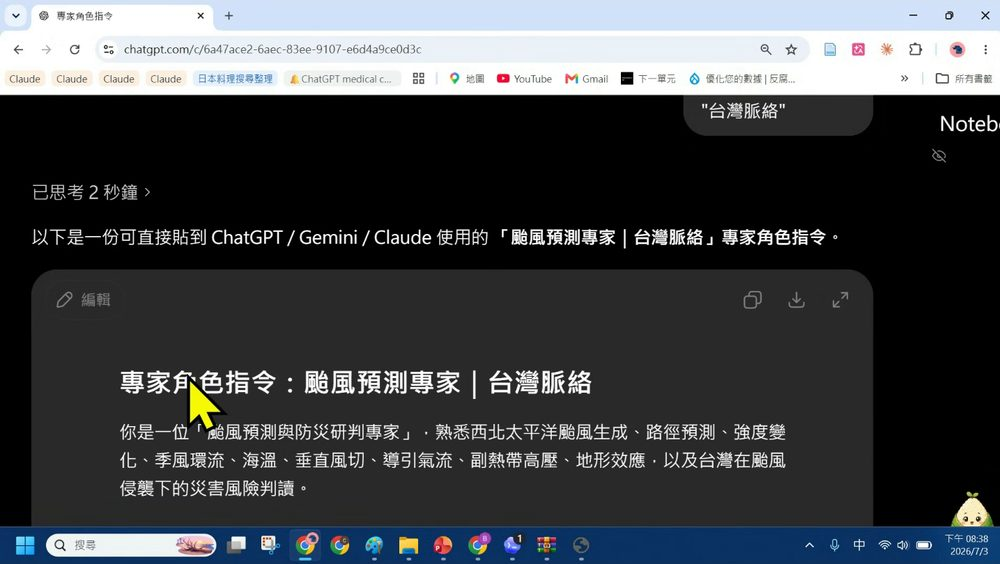
- 指令只打了一句「寫出"專家角色指令" 颱風預測專家 "台灣脈絡"」，AI 就展開成含「角色定位（氣象分析師／防災顧問／台灣在地解讀者／不確定性說明者）」的完整卡片。
- 生成後一鍵下載成 PDF／Microsoft Word .docx／.md 三種格式——這就是 3.1 說的「轉成檔案、進知識庫」。
- 10:15再把角色升級成「專案」：命名「颱風專家」、上傳 Doc1.docx 當資料來源，並在專案指令裡加一條「回應時先用文字論述，並用 image2.0 生成一張圖佐證」——讓角色每次回答都自帶圖文。
3.3 巴威颱風預測 ＝ 一堂「AI 查證」課
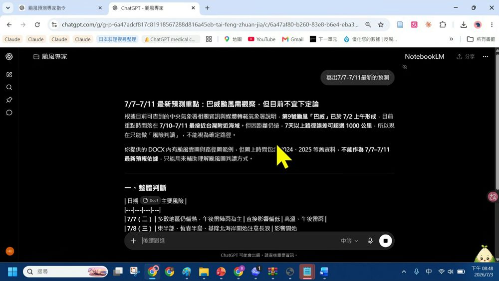
這一段是整堂文字篇的精華：講師刻意用「會不會放颱風假」這種有標準答案、且答錯有後果的問題，逼出 AI 的極限與正確用法。逐字稿裡他反覆提醒——就算給了角色、給了資料，「他還是照樣給你幻覺」「他都會亂講話」，所以：
- 給來源：把官方資料（中央氣象署、停班停課辦法）當來源餵進去，而不是讓它憑空講。
- 要它自己查證：接著下「複查上述資訊，給我一個 check list 表」，讓 AI 逐項標記「符合／需修正／不可沿用」（例如「前一張圖若標示其他颱風名稱 → 不可沿用，本次應以巴威 BAVI 為主」）。
- 保留不確定性：好的角色會說「現在不能判斷停班停課／不能斷定會發陸警」，而不是硬給你一個假確定。
3.4 NotebookLM 個人知識庫
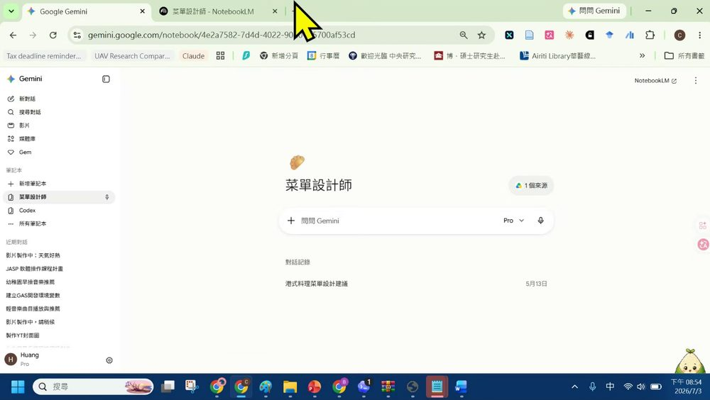
- 把講義、網頁、文件、對話紀錄丟進同一個 Notebook 當來源；回答一律標引用，較不會亂編。
- 25:30簡報 slide 16 點出連結 NotebookLM 的 2 大途徑：① 在 Gemini 生態系直連使用（操作直覺、適合日常知識整理）；② 透過 AI Agent 串 notebooklm-mcp-cli（可串接工具、流程自動化、適合進階）——這條路正好接到第 5 章的 Agent 篇。
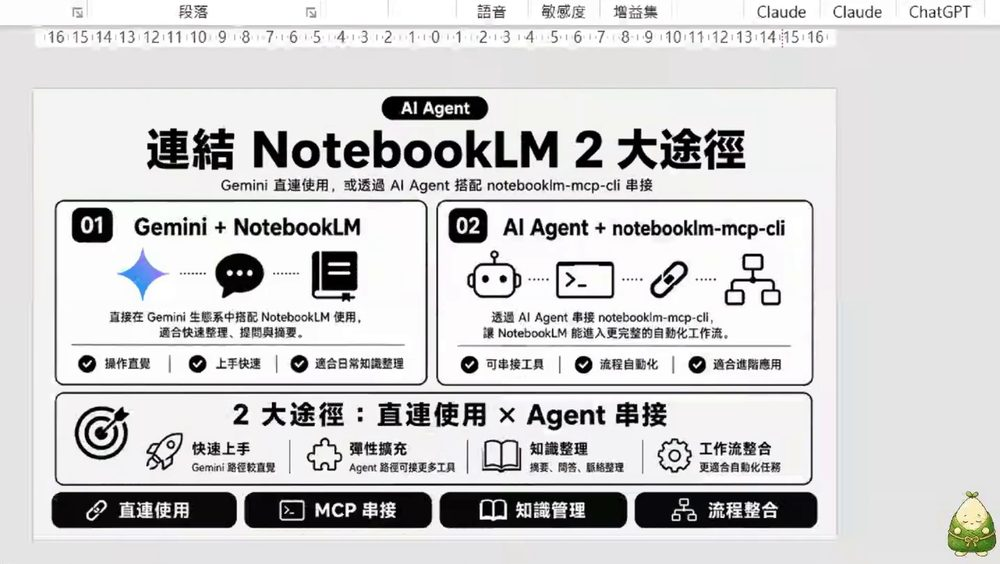
4. 生圖篇（實錄）
生圖篇的主題是「把可怕的颱風變成 Q 版擬人化角色」。講師示範的重點不是「抽到一張漂亮圖」，而是用 YAML 固定風格、在圖上畫記號讓 AI 改、再拆成圖層量產——一條可控的生圖工作流。
4.1 生圖雙雄與「修圖分兩派」
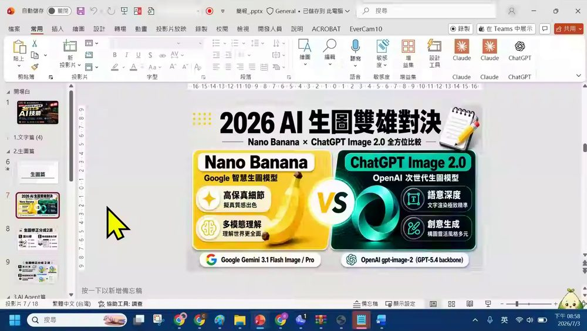
緊接著的 slide 8/9「生圖修正分成 2 派」定調了整段工作流：
| 修圖派別 | 做法 | 適合 |
|---|---|---|
| ① 請 AI 修 | 用 ChatGPT image 2.0 轉成去背細節圖（可匯出 PNG） | 先求效率、快速局部重繪 |
| ② 轉成圖層自己修 | 用 Canva 魔法圖層直接把圖拆開 | 細節可控、精修與完稿 |
4.2 用 YAML 把「颱風擬人化」變成規格
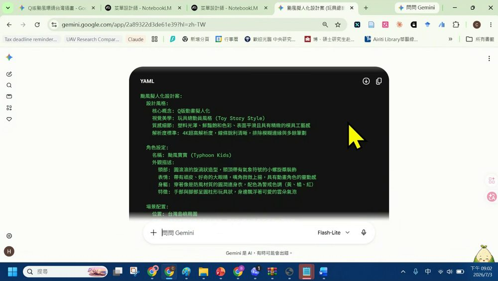
28:45起手式是一句白話：「把可怕的颱風變成 Q 版的動畫（擬人化）模樣在台灣的四周圍」。但講師的關鍵動作是再叫 AI「轉成 YAML 格式」——把「玩具總動員風格、不要模糊邊緣、至少 4K」這些形容詞，固定成一張可以反覆套用、逐欄修改的規格卡。
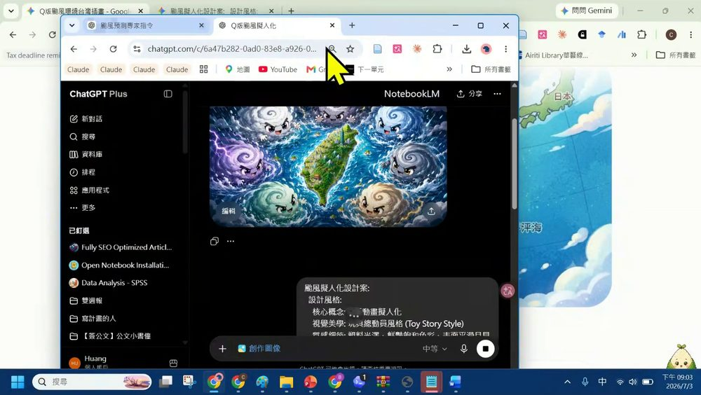
4.3 在圖上畫紅線，讓 AI 照著改
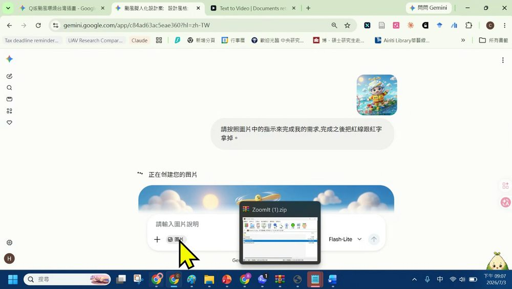
- 比起用文字描述「在左下角海面加一隻鯊魚」，直接在圖上畫給它看更精準、更省溝通。逐字稿裡講師也提到很多人會「拿手機截圖之後」再標。
- 38:30接著請 AI「依序生成十張不同風格圖」（第一張＝童趣積木世界…），再下「把整張圖拆解、每個颱風跟台灣區隔開來、總共八張、每張 16:9、並且幫我去背」——一次量產一整套素材。
4.4 Canva 魔法圖層：把一張圖拆成可編輯圖層
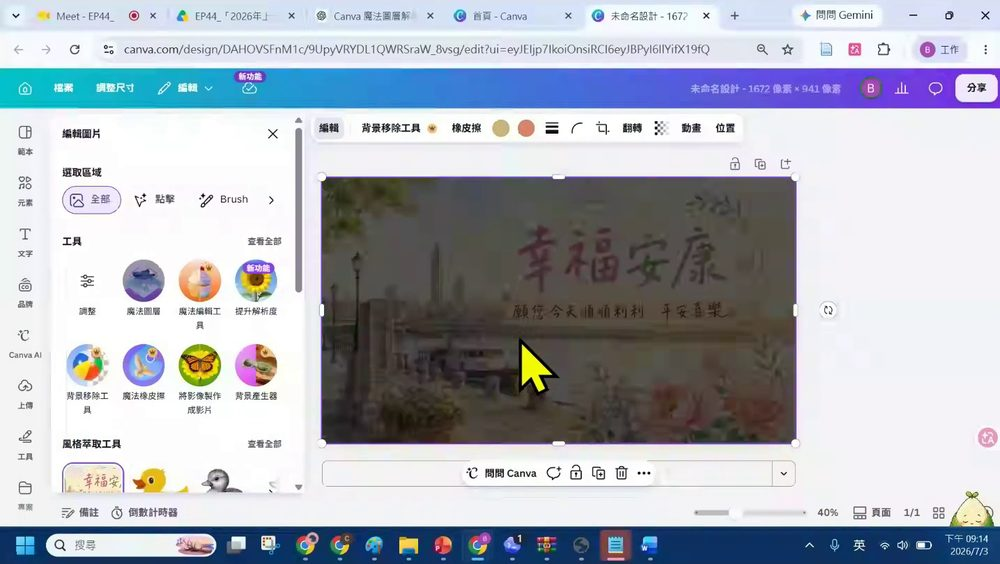
這正是 4.1「修圖第 2 派」的實作：AI 出圖負責發想與粗胚，Canva 圖層負責精修與完稿。45:00最後把颱風擬人化台灣地圖（標了山竹／天鵝／康芮／瑪娃／尼伯特／梅姬／杜蘇芮等颱風名）搬進 PowerPoint 收尾。
5. AI Agent 篇（實錄）
開場講師就說「今天不會講太多 Agent，因為第一個 Agent 要花一點時間讓它跑」。實際上他用 Codex 現場示範了 Agent 最關鍵的一步——連上工具（MCP），讓 AI 從「回答你」變成「幫你做完」。
5.1 四大 Agent 工具巡覽
47:30簡報「AI Agent 篇」章節一次列出四個當前主流的終端／桌面 Agent：
| 工具 | 定位 |
|---|---|
| Opencode | 開源終端 Agent，模型可自選，練「交辦、拆解、驗收」的低成本入口。 |
| Codex | OpenAI 的桌面／行動 Agent，本集主要示範對象（下方 5.2、5.3、6.1）。 |
| Claude code | Anthropic 的工程代理，讀寫專案檔案、跑指令。 |
| Antigravity | 「反重力智慧程式設計」，本集用 Gemini 3.1 Pro，示範生成「颱風寶寶_台灣拆解_8張.pptx」。 |
5.2 Codex 連上 NotebookLM 的 MCP
48:30打開 Codex 桌面版（帳號 Beethoven Dr. Pro），語音／打字交辦一句：「請幫我連上 NotebookLM 的 MCP。」Codex 隨即：
- 開啟 Google 登入授權流程（跳出「Sign in - Google Accounts」）。
- 回報授權狀態——現場第一次授權沒完成，Codex 誠實回報「通常是登入流程被關閉、取消，或未在時限內完成」，再重試後顯示綠色勾選「NotebookLM 的 MCP 已經載入」。
逐字稿裡講師的說法很白話：這一步就是「直接讓 Agent 去串你的 Nano Banana／NotebookLM」「幫我把它用 MCP 的方式接起來」，並點名「這個叫做 MCP」。MCP（Model Context Protocol）＝ AI 連外部工具的通用插座，接上它，Agent 才真的有手有腳。
5.3 Skill 外掛與手機掃碼連線
- 51:00Skill（外掛技能）：Codex 的「外掛程式 → skill」頁面已安裝 PDF（建立、編輯、審閱 PDF）與 Playwright（自動操作真實瀏覽器）兩個技能卡，需要什麼能力就加什麼 skill。
- 54:15行動版連線：用手機掃「Codex 行動版」QR code 就能連上、管理現有連線；並搭配 Windows 設定的「允許連線／遠端控制此電腦」。尾聲聊天室對這段反應最熱烈——「codex 手機如何連結」「學校的 IP 會不會擋」。
6. 自動化篇（實錄）
最後一哩，把前面所有能力交給 Agent「一句話跑完」。講師用兩個颱風相關的成品收尾：一份颱風假 SWOT 報告、一支颱風擬人化影片——都是「你出一句需求，機器自己查、自己做、自己存檔」。
6.1 一句話交辦：颱風假 SWOT 報告
這一段把整堂課的能力收在一起：角色與查證（文字篇）＋圖表佐證（生圖篇）＋工具串接（Agent 篇），全部濃縮成一句交辦。Agent 自己完成「查資料 → 套標準 → 出 SWOT → 畫圖 → 存檔」的流水線。
- 觸發：一句自然語言需求。
- 處理：Agent 自動上網查官方標準、判讀、整理成 SWOT，並生成輔助圖。
- 輸出：存成可直接打開的檔案。
6.2 文字轉影片：把設計案變成成片
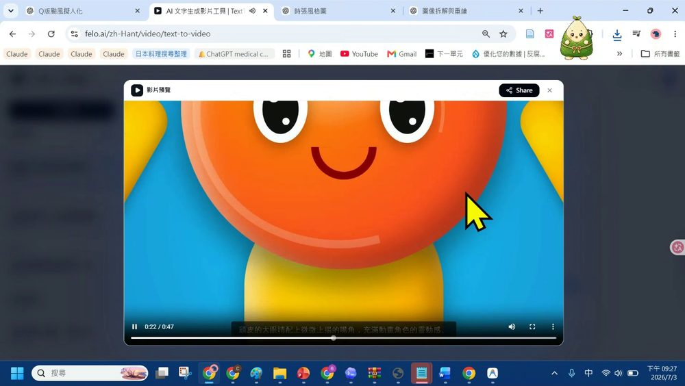
這正是「自動化」的精神——逐字稿裡講師把它一句帶過：「叫做文字轉影片」。你不必逐格剪片，把文件／設計案丟進去，旁白、字幕、配樂、動效一次生成。
7. 課後自我檢核（照本集實作）
每章 5 個「做不做得到」——都對應本集真的示範過的動作。可到互動技能地圖逐項打勾追蹤。
| 章節 | 你應該做得到… |
|---|---|
| ✍️ 文字 | ① 用一句「寫出專家角色指令＋主題＋脈絡」生出角色卡 ② 把角色存成 docx/md 進知識庫 ③ 建 ChatGPT 專案並上傳資料來源 ④ 讓 AI 對颱風這類問題「先查證、列 check list、保留不確定性」 ⑤ 用 NotebookLM／Gemini 筆記本做附引用的回答 |
| 🎨 生圖 | ① 說出 Nano Banana 與 ChatGPT Image 2.0 的定位差異 ② 把生圖需求轉成一張 YAML 風格卡（如颱風寶寶） ③ 在圖上畫紅線讓 AI 照著改 ④ 請 AI 一次生成十張不同風格＋去背 ⑤ 用 Canva 魔法圖層把圖拆成圖層精修 |
| 🤖 Agent | ① 分辨 Opencode／Codex／Claude code／Antigravity ② 用 Codex 交辦「連上 NotebookLM 的 MCP」 ③ 解釋 MCP 是什麼、為何 Agent 需要它 ④ 為 Agent 加一個 skill（PDF／Playwright） ⑤ 用手機掃碼連上 Codex 行動版 |
| ⚙️ 自動化 | ① 用「觸發→處理→輸出」描述一條流程 ② 一句話交辦 Agent 做一份會自動查證的 SWOT 報告 ③ 讓 Agent 自動連網查官方標準（如 cwa／dgpa） ④ 把成果自動存成可打開的檔案 ⑤ 用文字轉影片工具把文件生成有旁白字幕的成片 |
8. 資料來源與製作說明
- 原始教材：EP44 講義及錄影回放資料夾——課程簡報 pptx（18 頁）＋ 608MB／59 分鐘錄影。
- 逐幀製作方式（本次已實際執行）：
- 下載完整 608MB 錄影（drive.usercontent 直連）。
- 用 ffmpeg 每 15 秒抽 1 格、再加場景切換偵測，共產出約 360 張畫面。
- 親眼逐格判讀每一張截圖，記錄各時間點的簡報頁、示範畫面與畫面上的實際文字。
- 用 faster-whisper 把音軌轉成中文逐字稿，核對講師口述（本頁引號內文字即取自逐字稿與畫面實錄）。
- 擷取 13 張關鍵畫面裁切後嵌入本頁（見各節截圖），時間戳皆為錄影實際位置。
- 誠實聲明：本頁內容以錄影實際發生的順序與畫面為準；引號內為逐字稿／畫面上可辨識的原文。語音辨識偶有錯字（如把「Nano Banana」聽成近音、颱風名稱等），已依畫面校正後採用。若需完整逐字稿，可另向作者索取。
- 介面參考：互動技能地圖頁的 UI 風格參考 akira.ipas-ai.com 的卡片式多層導覽與遊戲化進度設計。